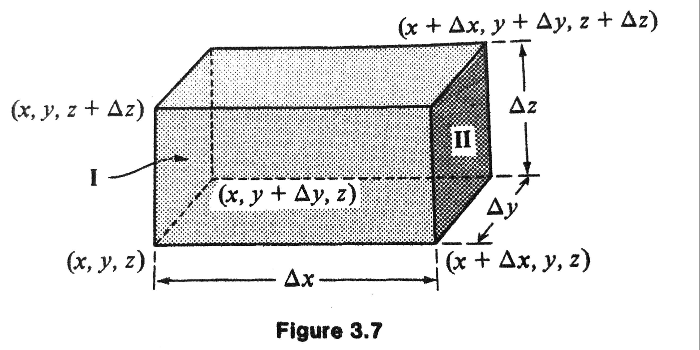
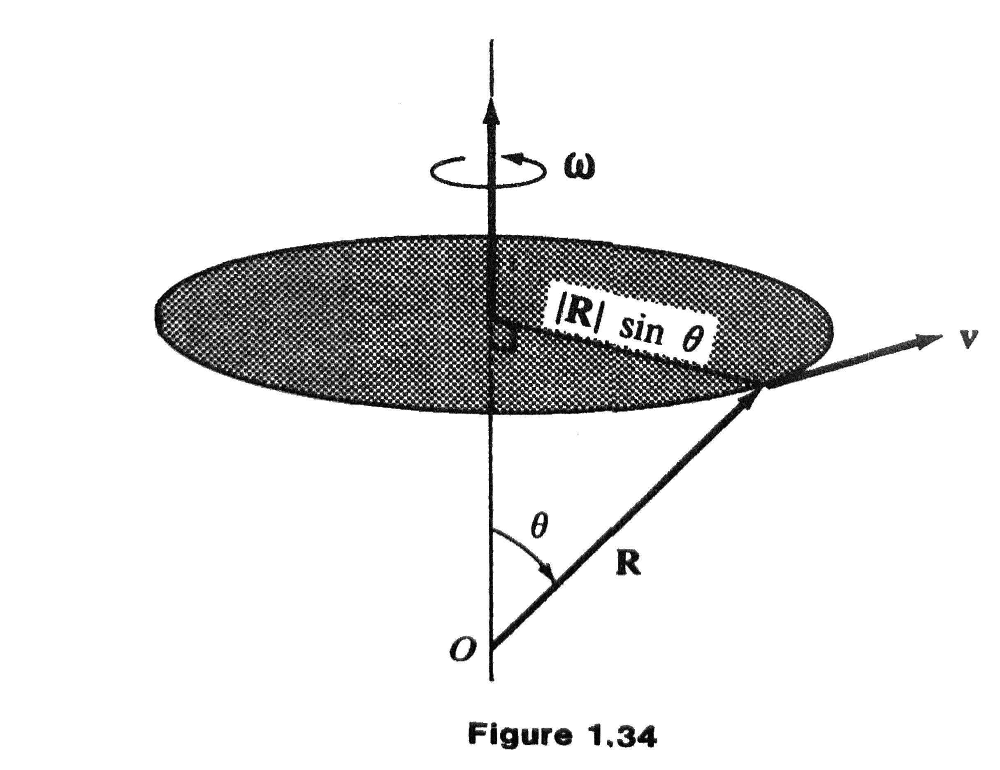

MATH 4100 - Vector Analysis
Jie Zhong
Department of Mathematics
California State University, Los Angeles
Chapter 3 Scalar and Vector Fields
3.1 Scalar Fields; Isotimic Surface; Gradients
This section, we mainly follow Sec 2.6 in (Marsden and Tromba 2011), but still use the notations from our textbook (to be consistent).
Scalar Fields
A scalar field \(f\) is a rule that assigns a number (or scalar) \(f(x, y, z)\) to each point \((x, y, z)\) of a region in space. In other words, a scalar field is simply a scalar-valued function of three variables:
Examples of Scalar Fields
- mass density of the atmosphere
- temperature at each point in an insulated wall
- water pressure at each point in the ocean
- gravitational potential of points in astronomical space
- electrostatic potential of the region between two condenser plates
Examples of Scalar Fields
- \(f(x, y, z) = x + 2y - 3z\)
- \(f(x, y, z) = x^2 + y^2 + z^2\)
- \(f(x, y, z) = x^2 + y^2\)
- \(\displaystyle f(x, y, z) = \frac{x^2}{4} + \frac{y^2}{9} + z^2\)
- \(f(x, y, z) = \sqrt{x^2 + y^2} - z\)
- \(\displaystyle f(x, y, z) = \frac{1}{x^2 + y^2}\)
Isotimic Surface (Level Set)
If \(f\) is scalar field, any surface defined by \(f(x, y, z) = C\), where \(C\) is a constant, is called an isotimic surface (or level set as in (Marsden and Tromba 2011)).
Examples of Isotimic Surfaces
- \(f(x, y, z) = x + 2y - 3z = C\): all planes perpendicular to the vector \(\mathbf{i} + 2 \mathbf{j} - 3 \mathbf{k}\).
- \(f(x, y, z) = x^2 + y^2 + z^2= C\): all spheres with center at the origin.
- \(f(x, y, z) = x^2 + y^2= C\): all right circular cylinders with the \(z\) axis as axis of symmetry
- \(\displaystyle f(x, y, z) = \frac{x^2}{4} + \frac{y^2}{9} + z^2= C\): a family of ellipsoids.
- \(f(x, y, z) = \sqrt{x^2 + y^2} - z= C\): a family of cones.
- \(\displaystyle f(x, y, z) = \frac{1}{x^2 + y^2}= C\): same as Example 3.
Examples of Isotimic Surfaces - Continued
Gradient
Next, we use the methods of calculus to study the surfaces. Specifically, gradients will be used to obtain a formula for the plane tangent to an isotimic surface.
Definition
If \(f\) is a differentiable scalar field, the gradient of \(f\) at the point \((x, y, z)\) is a vector in space given by
Example 1
Let \(f(x, y, z) = \sqrt{x^2 + y^2 + z^2} = r\), the distance from \(\mathbf{0}\) to the point \((x, y, z)\). Then
Thus, the gradient of \(f\) in this example is the unit vector in the direction of \((x, y, z)\).
Example 2
If \(f(x, y, z) = xy + z\), then
Directional Derivatives
To understand the geometric significance of the gradient, let’s study the function restricted to a line.
- \(f\) is a scalar field.
- \(\mathbf{v}\) and \(\mathbf{x}\) are fixed vectors in space.
- The set of points of the form \(\mathbf{x} + s \mathbf{v}, s\in \mathbb{R}\) is the line \(L\) through the point \(\mathbf{x}\) parallel to the vector \(\mathbf{v}\).
- The function \(s \mapsto f(\mathbf{x} + s \mathbf{v})\) represents the function \(f\) restricted to the line \(L\).
- Question: How fast are the values of \(f\) changing along the line \(L\) at the point \(\mathbf{x}\)?
Directional Derivatives - Continued
Definition
If \(f\) is a scalar field, the directional derivative of \(f\) at \(\mathbf{x}\) along the vector \(\mathbf{v}\) is given by
Note: By convention, we always take \(\mathbf{v}\) as a unit vector. Please refer to page 136 in (Marsden and Tromba 2011) for intuition on why a unit vector is chosen in the definition.
Gradient and Directional Derivative
Theorem
If \(f\) is a differentiable scalar field, then all directional derivatives exist. The directional derivative of \(f\) at the point \(\mathbf{x}\) in the direction \(\mathbf{v}\) is given by
Gradient and Directional Derivative - Continued
Proof
Let \(\mathbf{c}(s) = \mathbf{x} + s \mathbf{v}\), so that \(f(\mathbf{x} + s \mathbf{v}) = f(\mathbf{c}(s))\). By the chain rule,
However, \(\mathbf{c}(0) = \mathbf{x}\) and \(\mathbf{c}'(0) = \mathbf{v}\), and so
Example 3
Let \(f(x, y, z) = x^2 e^{-yz}\). Compute the rate of change of \(f\) in the direction of the unit vector
Solution The desired rate of change is the directional derivative
which, at the point \((1, 0, 0)\), becomes
Example 3.1
Find \(df/ds\) in the direction of the vector \(4 \mathbf{i} + 4 \mathbf{j} - 2 \mathbf{k}\) at the point \((1, 1, 2)\) if \(f(x, y, z) = x^2 + y^2 - z\).
Solution
- \(\mathbf{grad} f = 2x \mathbf{i} + 2y \mathbf{j} - \mathbf{k} = 2 \mathbf{i} + 2 \mathbf{j} - \mathbf{k}\) at \((1, 1, 2)\).
- A unit vector in the desired direction is \(\displaystyle \mathbf{v} = \frac{2}{3} \mathbf{i} + \frac{2}{3}\mathbf{j} - \frac{1}{3} \mathbf{k}\).
- By Theorem, \(\displaystyle \frac{df}{ds} = \mathbf{v} \cdot \mathbf{grad} f = \frac{4}{3} + \frac{4}{3} + \frac{1}{3} = 3\).
- This means that the value of the function \(f\) is increasing \(3\) units per unit distance if we proceed from \((1, 1, 2)\) in the direction stated.
Direction of Fastest Increase
Theorem Assume \(\mathbf{grad} f \neq 0\). Then \(\mathbf{grad} f\) points in the direction along which \(f\) is increasing the fastest.
Proof
- By Theorem, \(\displaystyle \frac{df}{ds} = \mathbf{grad} f \cdot \mathbf{v} = |\mathbf{grad} f| \cos \theta\), where \(\theta\) is the angle between \(\mathbf{grad} f\) and the unit vector \(\mathbf{v}\).
- This is maximum when \(\theta = 0\).
Example 3.2
The temperature of points in space is given by \(f(x, y, z) = x^2 + y^2 - z\). A mosquito located at \((1, 1, 2)\) desires to fly in such a direction that he will get cool as soon as possible. In what direction should he move?
Solution
- As we saw in Example 3.1, \(\mathbf{grad} f = 2 \mathbf{i} + 2 \mathbf{j} - \mathbf{k}\) at \((1, 1, 2)\).
- The mosquito should move in the direction \(- \mathbf{grad} f\).
Gradients and Tangent Planes to Isotimic Surfaces
Intuitively, the gradient points in the direction in which the values of \(f\) change most rapidly, whereas an isotimic surface lies in the direction in which they do not change at all. If \(f\) is reasonably well behaved, the gradient and the isotimic surface will be perpendicular.
Theorem
Let \(f\) be a \(C^1\) scalar function and let \((x_0, y_0, z_0)\) lie on the isotimic surface \(S\) defined by \(f(x, y, z) = C\), for \(C\) a constant. Then \(\mathbf{grad} f\) is normal to the isotimic surface in the following sense: If \(\mathbf{v}\) is the tangent vector at \(t=0\) of a path \(\mathbf{c}(t)\) in \(S\) with \(\mathbf{c}(0) = (x_0, y_0, z_0)\), then \(\mathbf{grad} f(x_0, y_0, z_0) \cdot \mathbf{v} = 0\).
Proof
Let \(\mathbf{c}(t)\) lie in \(S\); then \(f(\mathbf{c}(t)) = C\). Let \(\mathbf{v}\) be the tangent vector in the assumption, then \(\mathbf{v} = \mathbf{c}'(0)\). Hence, the fact that \(f(\mathbf{c}(t))\) is constant in \(t\), and the chain rule give
Example 3.5
Find a unit vector normal to the surface \(x^2 + y^2 - z = 6\) at the point \((2, 3, 7)\).
Solution
- This is an isotimic surface for the function \(\displaystyle f(x, y, z) = x^2 + y^2 - z\).
- At \((2, 3, 7)\), we have \(\displaystyle \mathbf{grad} f = 2 x \mathbf{i} + 2 y \mathbf{j} - \mathbf{k} = 4 \mathbf{i} + 6 \mathbf{j} - \mathbf{k}\).
- Since \(|\mathbf{grad} f| = \sqrt{53}\), the answer is \(\displaystyle \frac{\sqrt{53}}{53} (4 \mathbf{i} + 6 \mathbf{j} - \mathbf{k})\).
Tangent Planes to Isotimic Surfaces
Definition
Let \(S\) be the isotimic surface defined by \(f(x, y, z) = C\), for \(C\) a constant. The tangent plane of \(S\) at a point \((x_0, y_0, z_0)\) of \(S\) is defined by the equation
Example 6
Compute the equation of the plane tangent to the surface defined by \(3xy + z^2 = 4\) at \((1, 1, 1)\).
Solution
- Here \(f(x, y, z) = 3xy + z^2\), and \(\mathbf{grad}f = 3y \mathbf{i} + 3x \mathbf{j} + 2z \mathbf{k} = 3\mathbf{i} + 3\mathbf{j} + 2 \mathbf{k}\) at \((1, 1, 1)\).
- The tangent plane is \((3, 3, 2) \cdot (x-1, y-1, z -1) = 0\), or equivalently,
- \(3x + 3y + 2 z = 8\).
3.2 Vector Fields and Flow Lines
This section, we also follow Sec 4.3 in (Marsden and Tromba 2011), but still use the notations from our textbook (to be consistent).
Vector Field
Definition
A vector field is a rule associating with each point \((x, y, z)\) in a region a vector \(\mathbf{F}(x, y, z)\). In other words, a vector field is a vector-valued function of three variables.
Picture \(\mathbf{F}\) as attaching an arrow to each point (Figure 4.3.1).

Velocity Field
The flow of water through a pipe is said to be steady if, at each point inside the pipe, the velocity of the fluid passing through that point does not change with time. (Note that this is quite different from saying that the water in the pipe is not moving.) Attaching to each point the fluid velocity at that point, we obtain the velocity field \(\mathbf{V}\) of the fluid (see Figure 4.3.2). Notice that the length of the arrows (the speed), as well as the direction of flow, may change from point to point.

Gradient Vector Fields
In Sec 3.1, we introduced the gradient of a scalar field by
Now we want to think of this as an example of a vector field – it assigns a vector to each point \((x, y, z)\). As such, we refer to \(\mathbf{grad} f\) as a gradient vector field.
Flux Vector Field
A piece of material is heated on one side and cooled on another. The temperature at each point within the body is described at a given moment by a scalar field \(T(x, y, z)\). The flow of heat may be marked by a field of arrows indicating the direction and magnitude of the flow (Figure 4.3.5). This energy or heat flux vector field is given by \(\mathbf{J} = - k \nabla T\), where \(k > 0\) is a constant called the conductivity. Isotimic surfaces of \(T\) are called isotherms. Note that the heat flows from hot regions toward cold ones, since \(- \nabla T\) points in the direction of decreasing \(T\).

Gravitational Force Field
The force of attraction of the earth on a mass \(m\) can be described by a vector field called the gravitational force field. Place the origin of a coordinate system at the center of the earth (assumed spherical). According to Newton’s law of gravity, this field is given by

Flow Lines
If \(\mathbf{F}\) is a vector field, a flow line for \(\mathbf{F}\) is a curve \(\mathbf{R}(t)\) such that
In other words, a curve passing through the region is called a flow line of \(\mathbf{F}\), if at every point on the curve, \(\mathbf{F}\) is tangent to the curve.
Flow lines are also called stream lines or characteristic curves of \(\mathbf{F}\).

How to Find Flow Lines
- Assume \(\mathbf{R}(t)\) is the flow line of \(\mathbf{F}\).
- Then the unit vector \(\mathbf{T}\) tangent to \(\mathbf{R}\) have the same direction as \(\mathbf{F}\), so \(\mathbf{T} = \beta \mathbf{F}\).
- From Sec 2.2, we have \(\displaystyle \mathbf{T} = \frac{d \mathbf{R}}{ds} = \frac{dx}{ds} \mathbf{i} + \frac{dy}{ds} \mathbf{j} + \frac{dz}{ds} \mathbf{k}\).
- Comparing the components: \(\displaystyle \beta F_1 = \frac{dx}{ds}, \beta F_2 = \frac{dy}{ds}, \beta F_3 = \frac{dz}{ds}\).
- Eliminating \(s\), we have the differential equations: \(\displaystyle \frac{dx}{F_1} = \frac{dy}{F_2} = \frac{dz}{F_3}\).
Example 3.10
If \(\mathbf{F} = x \mathbf{i} + y \mathbf{j} + \mathbf{k}\), find the flow lines.
Solution
- \(F_1 = x, F_2 = y, F_3 = 1\).
- Solving the differential equations \(\displaystyle \frac{dx}{x} = dz, \frac{dy}{y} = dz\), we obtain \(x = C_1 e^z, y = C_2 e^z\).
- If the flow line passing through the point \((3, 4, 7)\), we have \(\displaystyle x = 3 e^{z - 7}, y = 4 e^{z - 7}\).
- If the flow line passing through the origin, then \(x = y = 0\).
Example 3.12
If \(\mathbf{F} = - y \mathbf{i} + x \mathbf{j}\), find the flow lines.
Solution
- Since \(\mathbf{T} = \beta \mathbf{F}\), we have \(\displaystyle -\beta y = \frac{dx}{ds}, \quad \beta x = \frac{dy}{ds}, \quad 0 = \frac{dz}{ds}\).
- Thus, \(\displaystyle - \frac{dx}{y} = \frac{dy}{x}\), and hence \(x^2 + y^2 = \text{constant}\).
- Also, \(z = \text{constant}\).
- The flow lines are circles surrounding the \(z\) axis and are parallel to the \(xy\) plane.

3.3 Divergence
Introduction
- The concept of gradient, as we have presented it, describes the rate of change of a scalar field.
- We now consider the more complicated problem of describing the rate of change of a vector field.
- There are two fundamental measures of this rate of change: the divergence and the curl.
Introduction - Continued
Roughly speaking, the divergence of a vector field is a scalar field that tells us, at each point, the extent to which the field explodes, or diverges, from that point. The curl of a vector field is a vector field that gives us, at each point, an indication of how the field swirls in the vicinity of that point.
In this section, we consider only the divergence. We begin by presenting a heuristic derivation, which will serve to motivate the formal definition.
Motivation
As usual, the vector field will be denoted by
To define the divergence of the field \(\mathbf{F}\), we imagine an infinitesimal rectangular parallelepiped having corners at \((x, y, z), (x + \Delta x, y, z), (x, y+\Delta y, z), (x, y, z + \Delta z)\) and so on (Fig 3.7).
Motivation - Continued

We shall compute the total flux of the field \(\mathbf{F}\) through the six sides of this box in the outward direction (i.e., on each side we choose \(\mathbf{n}\) to be the outward normal). We then divide this flux by the volume of the box and take the limit as the dimensions of the box go to zero. This limit is called the divergence of \(\mathbf{F}\) at the point \((x, y, z)\). In other words, the divergence is the net out-flux per unit volume.
Derivation
The computation of this limit proceeds as follows:
- The total flux out of faces I and II as \([F_1(x + \Delta x, y z) - F_1(x, y, z)]\Delta y \Delta z\).
- The difference in these values of \(F_1\) is given by \(\displaystyle \frac{\partial F_1}{\partial x} \Delta x\).
- Thus the contribution to the net outward flux from faces I and II is \(\displaystyle \frac{\partial F_1}{\partial x} \Delta x \Delta y \Delta z\).
- Adding the contribution of the four remaining faces, we see that the net outward flux is approximately \(\displaystyle \left( \frac{\partial F_1}{\partial x} + \frac{\partial F_2}{\partial y} + \frac{\partial F_3}{\partial z} \right) \Delta x \Delta y \Delta z\).
- After we divide by the volume \(\Delta x \Delta y \Delta z\), our approximations becomes accurate as we take the limit.
Definition
The divergence of a vector field
is a scalar field, denoted \(\text{div} \mathbf{F}\), defined by
Example 3.13
Find \(\text{div}\mathbf{F}\) if \(\mathbf{F} = x \mathbf{i} + y^2 z \mathbf{j} + x z^3 \mathbf{k}\).
Solution
Example 3.14
Find \(\text{div}\mathbf{F}\) if \(\mathbf{F} = x e^y \mathbf{i} + e^{xy} \mathbf{j} + \sin(yz) \mathbf{k}\).
Solution
Example 3.16
In Figure 3.8, is the divergence of \(\mathbf{F}\) at point \(P\) positive or negative? Assume no variation of \(\mathbf{F}\) in the \(z\) direction and that \(F_3\) is identically zero.
Solution
- Heuristically, the flux through \(x\) faces at \(P\) will cancel, while there is definitely flux out of both \(y\) faces. No flux in \(z\) direction, so the total divergence is positive.
- Rigorously, \(\displaystyle \frac{\partial F_1}{\partial x} = \frac{\partial F_3}{\partial z} = 0\), but \(\displaystyle \frac{\partial F_2}{\partial y} > 0\), so \(\text{div}\mathbf{F}>0\) at \(P\).
Example 3.17
In Figure 3.9, is the divergence of \(\mathbf{F}\) at the point \(P\) positive or negative? Assume no variation of \(\mathbf{F}\) in the \(z\) direction and that \(F_3\) is identically zero.
Solution
- Heuristically, no flux in either \(y\) or \(z\) direction; and the flux in the \(x\) direction decreases as we move to the right, so the net flux through the sides of a box at \(P\) is inward, and the total divergence is negative.
- Rigorously, \(\displaystyle \frac{\partial F_2}{\partial y} = \frac{\partial F_3}{\partial z} = 0\), but \(\displaystyle \frac{\partial F_1}{\partial x} < 0\), so \(\text{div}\mathbf{F}<0\) at \(P\).
3.4 Curl
Definition
The curl of a vector field \(\mathbf{F} = F_1 \mathbf{i} + F_2 \mathbf{j} + F_3 \mathbf{k}\) is the vector field
or equivalently, the determinant form
Example 7
If \(\mathbf{F} = x \mathbf{i} + xy \mathbf{j} + \mathbf{k}\), find the curl of \(\mathbf{F}\).
Solution
Example 8
If \(\mathbf{F} = x y\mathbf{i} - \sin z \mathbf{j} + \mathbf{k}\), find the curl of \(\mathbf{F}\).
Solution
Example 10
If \(\displaystyle \mathbf{F} = \frac{y \mathbf{i}-x \mathbf{j}}{x^2+y^2}\), find the curl of \(\mathbf{F}\).
Solution
Note: We say a vector field is irrotational if its curl is zero, which means if a small rigid paddle wheel is placed in the fluid, it will move with the fluid but will not rotate around its own axis.
Example 3.21
In what direction is \(\mathbf{curl}\, \mathbf{F}\), if \(\mathbf{F}\) is as shown in Figure 3.15?
Solution
- \(\mathbf{F}\) is directed parallel to the \(y\) axis.
- Also, the magnitude of \(\mathbf{F}\) seems proportional to \(x\).
- Guess that \(\mathbf{F} = C x \mathbf{j}\), where \(C\) is a negative constant.
- \(\displaystyle \mathbf{curl}\, \mathbf{F} = \begin{vmatrix} \mathbf{i} & \mathbf{j} & \mathbf{k}\\ \frac{\partial}{\partial x} & \frac{\partial}{\partial y} & \frac{\partial}{\partial z}\\ 0 & Cx & 0 \end{vmatrix} = C \mathbf{k}\).
- Since \(C\) is negative, the curl is directed into the page (negative \(z\) direction).
The Curl and Rotations
Recall that in Sec 1.12 (Vector Products), a rigid body rotating about a fixed axis with a constant angular speed \(\omega\). Then the velocity of the particle at the point \(\mathbf{R}\) is
\[ \mathbf{v} = \vec{\omega} \times \mathbf{R}, \]
where \(\vec{\omega}\) is directed along the axis of rotation and with the magnitude \(|\mathbf{\omega}| = \omega\).
The speed (magnitude of the velocity) of the particle is
\[ \vert \mathbf{v} \vert = \omega | \mathbf{R} | \sin \theta, \]
where \(\theta\) is the angle between \(\mathbf{R}\) and the axis of rotation.
The Curl and Rotations - Continued
If we choose a coordinate system such that \(\vec{\omega} = \omega \mathbf{k}\), and \(\mathbf{R} = x \mathbf{i} + y \mathbf{j} + z \mathbf{k}\), then
and so
Hence, for the rotation of a rigid body, the curl of the velocity vector field is a vector field whose value is the same at each point. It is directed along the axis of rotation with magnitude twice the angular speed.

3.5 Del Notation
Motivation
- Up to now, we have functions that associate numbers with numbers (the function of elementary calculus), vectors with numbers (Chapter 2), numbers with points in space (scalar fields), and vectors with points in space (vector fields).
- But we can also define functions that associate functions with functions.
- We call such functions, operators, which are rules that associate a new function with each member of a particular class of functions.
- To take an example from elementary calculus, the process of differentiation defines what is called the derivative operator. This is the operator that associates with every differential function \(f\) its derivative \(df/dx\), and we sometimes denote it by \(D\), and write \(\displaystyle D(f) = \frac{df}{dx}\).
Example of Differential Operator
Consider
which means for a function \(f \in C^2\), we have
Matrices as Operators
Let \(M\) be a \(n\times n\) matrix, then it associates an \(n\) dimensional vector \(\mathbf{v}\) with an \(n\) dimensional vector \(\mathbf{u}\), i.e.,
Linear Operators
An operator \(L\) is linear if for any \(\varphi\) and \(\psi\) in the domain of \(L\), and a constant \(c\), we have
Note: Both differential and matrix operators are linear.
Gradient, Divergence, and Curl
- The operator \(\nabla\), is called “del” (sometimes “nabla”), which is an abbreviation for \(\displaystyle \mathbf{i} \frac{\partial}{\partial x} + \mathbf{j} \frac{\partial}{\partial y} + \mathbf{k} \frac{\partial}{\partial z}\).
- \(\mathbf{grad} f = \nabla f\).
- \(\text{div} \mathbf{F} = \nabla \cdot \mathbf{F}\).
- \(\mathbf{curl\, F} = \nabla \times \mathbf{F}\).
3.6 The Laplacian
Definition
The Laplacian is a differential operator that assigns a scalar field
to a scalar field \(f\).
In other words, the Laplacian is the composite of the two operators \(\mathbf{grad}\) and div, and some times we also denote it by \(\nabla^2\).
Properties of Laplacian
Laplacian is a linear operator.
Laplacian can also be applied to vector fields, for example, if
then we have
A scalar field \(f\) such that \(\Delta f = 0\) is called harmonic.
Example
Find \(\Delta f\), given that \(f(x, y, z) = 1/(x^2 + y^2 + z^2)^{1/2}\). Express you answer in terms of \(R = \sqrt{x^2 + y^2 + z^2}\).
Solution
- \(\displaystyle \frac{\partial R}{\partial x} = \frac{x}{R}\).
- \(\displaystyle \frac{\partial f}{\partial x} = - \frac{1}{R^2} \cdot \frac{x}{R} = - \frac{x}{R^3}\).
- \(\displaystyle \frac{\partial^2 f}{\partial x^2} = \frac{\partial}{\partial x} \left(- \frac{x}{R^3} \right) = - \frac{1}{R^3} + \frac{3x^2}{R^5}\).
- \(\displaystyle \Delta f = - \frac{3}{R^3} + \frac{3(x^2+y^2+z^2)}{R^5} = 0\).
- Thus, the scalar field \(1/R\) is harmonic.
Example
Assume \(f\) is a scalar field, the \(R = \sqrt{x^2 + y^2 + z^2}\), find \(\Delta f(R)\).
Solution
- \(\displaystyle \frac{\partial f(R)}{\partial x} = \frac{\partial f(R)}{\partial R} \cdot \frac{\partial R}{\partial x}\).
- \(\displaystyle \frac{\partial^2 f(R)}{\partial x^2} = \frac{\partial^2 f(R)}{\partial R^2} \cdot \left(\frac{\partial R}{\partial x}\right)^2 + \frac{\partial f(R)}{\partial R}\cdot \frac{\partial^2R}{\partial x^2}\).
- \(\displaystyle \frac{\partial^2 R}{\partial x^2} = \frac{\partial}{\partial x}\left( \frac{x}{R} \right) = \frac{1}{R} - \frac{x^2}{R^3}\).
- \(\displaystyle \Delta f(R) = \frac{\partial^2 f(R)}{\partial R^2} + \frac{2}{R}\cdot \frac{\partial f(R)}{\partial R}\).
- In particular, if \(f(x) = x^n\), then \(\Delta R^n = n(n+1) R^{n-2}\).
- When \(n = -1\), we arrive at the same answer that \(\Delta (1/R) = 0\).
3.8 Vector Identities
Let’s first consider what possible composite operators there are from \(\mathbf{grad}\), div, and \(\mathbf{curl}\).
Gradient Are Curl Free
Theorem For any \(C^2\) function \(f\),
That is, the curl of any gradient is the zero vector.
Proof
Example 11
Let \(\mathbf{F} = y \mathbf{i} - x \mathbf{j}\), show that \(\mathbf{F}\) is not a gradient field; that is, there is no \(f\) with \(\mathbf{grad} f = \mathbf{F}\).
Solution
- If \(\mathbf{F}\) were a gradient field, then it would satisfy \(\mathbf{curl}\, \mathbf{F} = \mathbf{0}\) by Theorem.
- But \(\displaystyle \mathbf{curl}\, \mathbf{F} = \begin{vmatrix} \mathbf{i} & \mathbf{j} & \mathbf{k}\\ \frac{\partial}{\partial x} & \frac{\partial}{\partial y} & \frac{\partial}{\partial z}\\ y & -x & 0\end{vmatrix} = -2 \mathbf{k} \neq \mathbf{0}\).
- So \(\mathbf{F}\) cannot be a gradient of any scalar field.
Curls Are Divergence Free
Theorem For any \(C^2\) vector field \(\mathbf{F}\),
That is, the divergence of any curl is zero.
Proof
- Heuristically, \(\displaystyle \nabla \cdot (\nabla \times \mathbf{F}) = \begin{vmatrix} \frac{\partial}{\partial x} & \frac{\partial}{\partial y} & \frac{\partial}{\partial z}\\ \frac{\partial}{\partial x} & \frac{\partial}{\partial y} & \frac{\partial}{\partial z}\\ F_1 & F_2 & F_3\end{vmatrix} = 0\).
Rigorously,
\begin{align*} \nabla \cdot (\nabla \times \mathbf{F}) & = \frac{\partial}{\partial x} \left( \frac{\partial F_3}{\partial y} - \frac{\partial F_2}{\partial z} \right) - \frac{\partial}{\partial y} \left( \frac{\partial F_3}{\partial x} - \frac{\partial F_1}{\partial z} \right) \\ & \quad + \frac{\partial}{\partial z} \left( \frac{\partial F_2}{\partial x} - \frac{\partial F_1}{\partial y} \right) = 0. \end{align*}
Example
Show that for any vector field \(\mathbf{F}\),
Proof
Proof - Continued
Proof - Continued
Some Product Rules
Suppose \(f, g\) are scalar fields, and \(\mathbf{F}, \mathbf{G}\) are vector fields. Then
In particular,